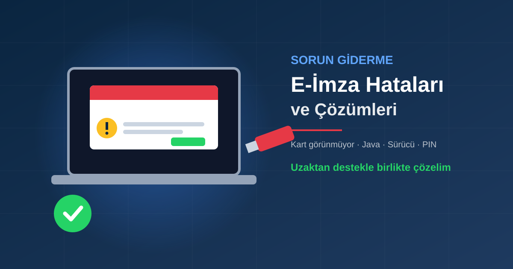

Önce Bu 4 Adımı Deneyin
Destek taleplerimizin büyük kısmı aşağıdaki dört basit adımla çözülüyor. Ayrıntılı hatalara geçmeden önce bunları sırayla deneyin:
1. Farklı USB port
Kartı/token'ı çıkarıp başka bir USB porta (mümkünse doğrudan bilgisayara, çoklayıcıya değil) takın.
2. Yeniden başlatma
Tarayıcıyı ve e-imza uygulamasını kapatın, bilgisayarı yeniden başlatın.
3. Sürücüyü yeniden kurun
Kart sürücüsünü kaldırıp güncel sürümünü yeniden kurun. Kurulum adımları için E-İmza Kurulumu yazımıza bakın.
4. Sertifika süresi
Hata "sertifika bulunamadı" veya "geçersiz sertifika" ise sorun teknik değil, sürenin dolmuş olması olabilir.
Hata 1: Bilgisayar E-İmzayı Görmüyor / Kart Okunmuyor
"Kart bulunamadı", "akıllı kart takılı değil" veya kart yönetim uygulamasında boş liste görüyorsanız:
- Işığı kontrol edin: Kart okuyucu veya token takılıyken ışık yanmıyorsa port, kablo ya da donanım sorunu vardır.
- Aygıt Yöneticisi: Windows'ta Aygıt Yöneticisi → Akıllı kart okuyucuları altında okuyucunuz sarı ünlemle görünüyorsa sürücü eksiktir.
- Doğru sürücü: Kart tipinize uygun sürücüyü kurun (Ayyıldız kartlarında AKİS altyapısı yaygındır; Safenet/Gemalto token'lar farklı sürücü ister).
- Kart kütüphanesi hatası: "Kart kütüphaneleri yüklenemedi" uyarısı genellikle sürücünün eksik veya eski olduğunu gösterir; sürücüyü yeniden kurmak çözer.
Hata 2: Java Hataları
Bazı kamu sistemleri ve masaüstü imza uygulamaları Java ile çalışır. Java kaynaklı tipik belirtiler: uygulama hiç açılmıyor, "Java bulunamadı" uyarısı veya imza ekranının boş gelmesi.
- Uygulamanın istediği sürümü java.com üzerinden kurun.
- Bilgisayarda birden fazla eski Java sürümü varsa Denetim Masası → Programlar'dan eskilerini kaldırın; çakışma en sık nedendir.
- Java kurduktan sonra imza uygulamasını ve tarayıcıyı yeniden başlatın.
Hata 3: "İmza Socket Sunucusuna Erişilemedi"
Bu mesaj, tarayıcıdaki sayfanın bilgisayarınızda çalışması gereken imza uygulamasına bağlanamadığını gösterir.
Uygulamayı başlatın
İmza uygulamasını (ilgili sistemin istediği yerel imza yazılımı) açın; görev çubuğunda simgesinin göründüğünden emin olun.
Sayfayı yenileyin
Uygulama açıkken tarayıcıda sayfayı yenileyin (F5).
Güvenlik yazılımı
Antivirüs veya güvenlik duvarı uygulamayı engelliyorsa izin verin.
Hata 4: Tarayıcı E-İmzayı Algılamıyor
Uygulamada kart görünüyor ama web sitesinde imza atılamıyorsa sorun tarayıcı eklentisindedir. Chrome, Edge ve Firefox için adım adım ayarlar E-İmza Tarayıcı Eklentisi Kurulumu yazımızda. Kısaca: eklentinin yüklü ve etkin olduğunu, site izinlerinin açık olduğunu kontrol edin; gizli pencerede eklentiler çoğunlukla kapalıdır.
Hata 5: PIN Kilitlendi / PUK Soruluyor
PIN'i 3 kez yanlış girerseniz kart bloke olur; kart yönetim uygulamasından PUK koduyla açıp yeni PIN belirlersiniz. PUK 5 kez yanlış girilirse kart kalıcı kilitlenir ve yeni başvuru gerekir. Ayrıntılar için Kayıp/Çalıntı/Hasarlı Kart rehberimize bakın.
Hata 6: "Sertifika Süresi Dolmuş" / "Yetki Bitiş Tarihi Dolmuştur"
Bu bir arıza değil, sertifikanızın geçerlilik süresinin bittiğini gösterir. Sürücü veya Java'yı yeniden kurmak işe yaramaz; e-imza yenileme gerekir. Süre dolmadan yenilemede yeni sertifika mevcut kartınıza yüklenir.
Hangi Durumda Destek Almalısınız?
- Yukarıdaki adımlardan sonra kart hâlâ okunmuyorsa,
- Birden fazla Java sürümü ve eski sürücüler bilgisayarda birbirine karışmışsa,
- Son gün beyanname, ihale veya dava işi beklemiyorsa ve vakit kaybetmek istemiyorsanız.
Uzaktan bağlantıyla bilgisayarınıza bağlanıp sürücü, Java ve tarayıcı ayarlarını birlikte düzenliyoruz.